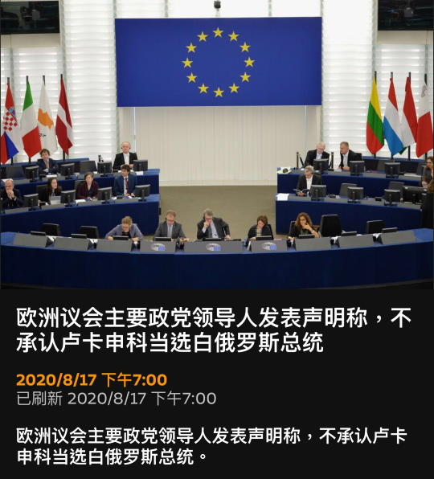
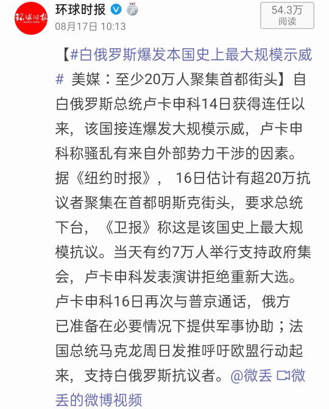
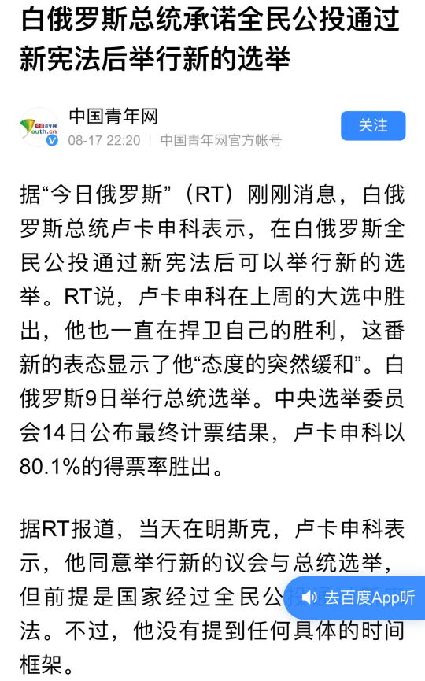
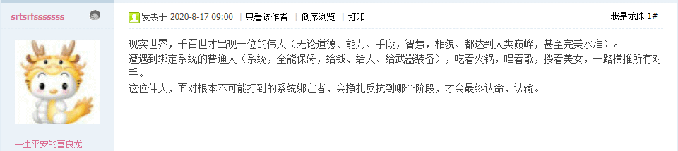
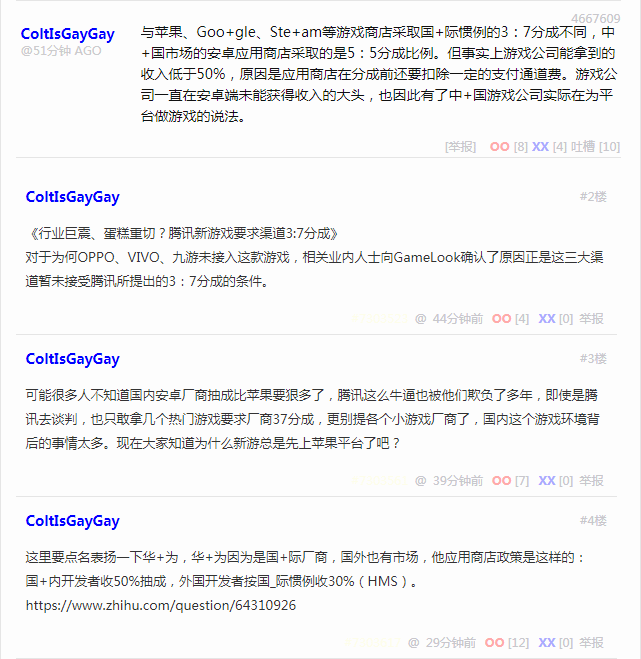
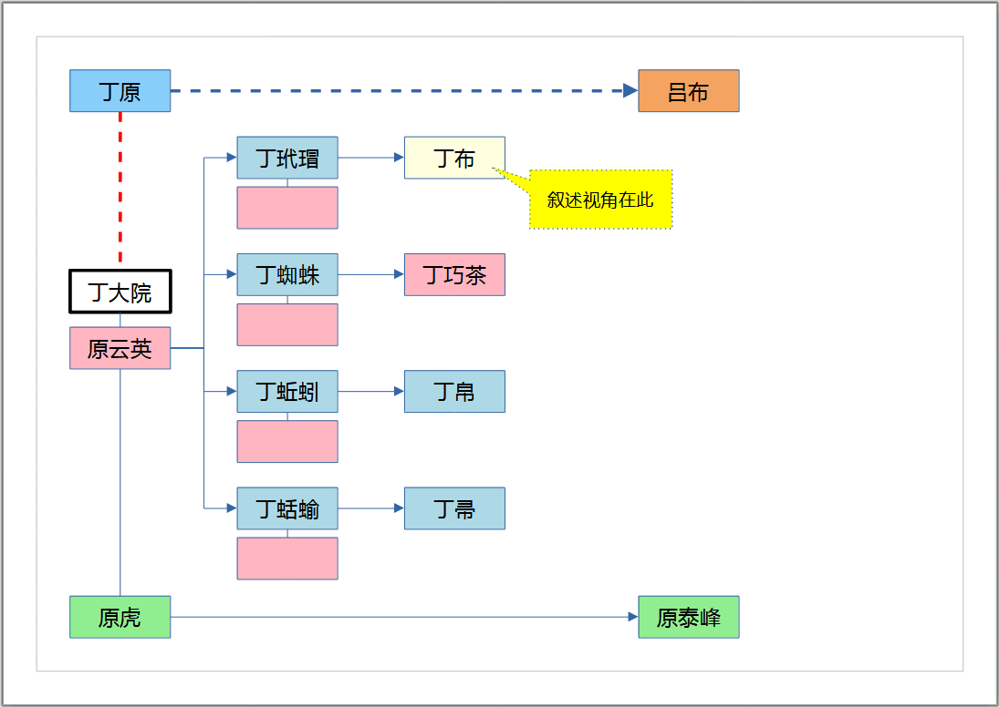

2020-08-18 09:23
刚爬起来酒劲还在头昏脑胀，上网乱转发现了一条色目含量甚高的重要情报：



或问了，明明是斯拉夫含量甚高，为啥要说成是色目含量呢？
在《异闻录》正文里面提到了，卢卡申科那个来历不明但终于在2007年获得承认的儿子，也就是2008年带着来到北京参加奥林匹斯山祭司大会的那个，生母不知何许人也，但就是被确定为钦定接班人，结合吟游诗人不打自招爆料判断，应该是不远万里从三洲通衢偷渡入境的野种或曰贵种，不接盘就下台。
之所以欧洲多国决定「以一个声音说话」，那是因为历史上被哪儿来的野种偷家两次了，拿破仑一次，希特勒一次，都是「E
泥鸽太君」，都是擅长以虚无缥缈的名词煽动起土著为了虚无缥缈的目标不懈奋斗，都是武德充沛开始以费拉不堪结束，打光了一代青年，为不远万里从三洲通衢偷渡的哪儿来的野种腾出了充沛的生存空间。
按照色目神棍自己讲话，「太阳底下没有新鲜事」，经典剧本反复上演而记忆只有七秒钟并且智商小于等于五的人民群众就会乐此不疲，只要把持了「文艺界」哗哗炮制玄幻小说，「造化弄人」之类一连串巧合无缝连接的按照唯物主义频率学派计算可能性甚低的小概率事件居然就发生了，而按照唯心主义贝叶斯学派不惮以最大的恶意揣测幕后黑手之阴谋诡计的计算结果才作出了正确的判断：「历史の必然」。
所以，卢卡申科认账的野种儿子估计也是「E
泥鸽太君」，与拿破仑希特勒一样来自埃塞俄比亚，使用司马懿·艾买提、司马懿·铁力瓦尔地、祖力亚提·司马懿、伊力夏提·司马懿、吐尔逊·司马懿之类名字标识「示巴女王」嫡传血统，不仅是白罗斯的钦定接班人，还是「俄白联盟」乃至新时代罗刹的钦定接班人，还援引基辅罗斯渊源和苏修档案，对乌克兰有宣称权。
按照剧本，这位童年才俊茁壮成长之后，就会暗地里豢养三千死士到处篡党夺权并把持宣传口播放「请注意，倒车」之类主旋律正能量，煽动斯拉夫傻哔武德充沛「试看将来的欧洲，必是赤旗的世界」，再一次把万恶的旧大陆打个稀巴烂，然后百善の新世界以及刚刚划清界限置身事外的南不列颠及北爱尔兰，又可以「躺赢」了。
与此同时，我中华兲朝上国杀伐果断通权达变狠角色从小比人聪明还比人努力的神童大少爷就可以隐瞒自己作为「vtuber皮」的身份，开挂升级装哔打脸平砍连击带顺劈一命通关天下布种走进国际一流和谐宜居之都紫禁城太和殿瞄准龙椅一屁股坐下了也。
至于为什么，九省通衢の煎蛋、之江临安「原创文学论坛」等地《动物世界》素材已经公开炫耀过了，无论拿破仑希特勒还是周恩来，乃至即将横空出世的吃着火锅的童年才俊，都是「黑奴」甚至「黑狗」，一切行动听主子指挥，不过是「绑定系统的普通人」而已，但就是「给钱、给人、给武器装备」于是「一路横推所有对手」：

顺便，羊毛出在羊身上，用来支持黑奴或黑狗的援助，也不是系统自己出，而是通过在当地贩毒刮地皮，弄来钱购买军火，雇佣当地毒虫，到处流窜担任播种机宣传队，于是一支又一支「革命队伍」就这么拉起来了也。
2020-08-18 12:00
洗完澡了精神抖擞容光焕发，上网乱转发现在九省通衢の煎蛋出现一条京师大学堂法律系和经济学院兼兲朝童年政治学院博士文凭含量甚高的重要情报：

《行业巨震、蛋糕重切？腾讯新游戏要求渠道3:7分成》
对于为何OPPO、VIVO、九游未接入这款游戏，相关业内人士向GameLook确认了原因正是这三大渠道暂未接受腾讯所提出的3：7分成的条件。
与苹果、Google、Steam等游戏商店采取国+际惯例的3：7分成不同，中国市场的安卓应用商店采取的是5：5分成比例。但事实上游戏公司能拿到的收入低于50%，原因是应用商店在分成前还要扣除一定的支付通道费。游戏公司一直在安卓端未能获得收入的大头，也因此有了中国游戏公司实际在为平台做游戏的说法。
这里要点名表扬一下华为，华为因为是国际厂商，国外也有市场，他应用商店政策是这样的：
国内开发者收50%抽成，外国开发者按国际惯例收30%（HMS）。
如何看待华为应用商店要求营运分成50%？
与此同时，根红苗正忠君爱国的童年才俊正在到处转贴红色经典顺便嘲笑庚子留美预备学堂化工系和人文社会学院马克思主义理论与思想政治教育专业兼中央党校之博士文凭：
经济学教授不能解释边币和法币，当然学生也不能解释。
——大野柱国李夜壺九郎三郎徳勝《改造我们的学习》，1941年5月19日
说时迟那时快，就在南直隶「远东第一体育论坛」奔走相告《数字货币来了！已有部分公务员领取数字货币工资》的大好形势下，还有部分顶风作案的苟延残喘的不用智能手机或者手持被基站设定为一联网就自动关机的2G古董智障手机的历史唯物主义の尘埃有气无力的重申央行的红头文件「任何场合不得拒收人民币纸币和硬币」妄图垂死挣扎。
在之前备份的陕甘宁边区和晋绥边区苦难辉煌历程中明确提到了「边币比法币贬值还快」「边区各军队机关纷纷带头拒用边币，做生意只收法币」「而牌价和黑市价之间的汇率差就被边区暗中吃了」「但请记住边区人民不是弱智」，也就是说没有抵押品的印刷品被市面上当成废纸，割据政权以暴力手段强行推广的同时却允许「自己人」阳奉阴违甚至还作为中间商赚差价。
只要在看到古为今用指桑骂槐的内容时稍微动动脑筋，就能知道当代兲朝什么是「现大洋」，什么是「法定货币」，什么是「代金券」，什么是「一串字母数字胡乱混合的符号」不仅能用来注册帐号追着人民群众狂喷「反汉贱种中国通」还能当成白条从人民群众手里收购大米白面真猪实羊然后引吭高歌「猪啊羊啊送到哪里去」再勒令人民群众自带毛驴运货到地头再卸磨杀驴多放花椒吃掉进补。
尤其是看到大批「抗日」相关内容的时候，要结合现实新闻理解，河清海晏歌舞升平的盛世景象当中，没看见大批皇军皇协军口吐协和语到处搞三光政策吖，只能证明在那帮身居「神界」吃香的喝辣的享受青春的鼠标战神的「兵棋」游戏当中，境内所有时事新闻体现的都是不见硝烟的金融战争。
于是以史为鉴，在「国军抗日」的同时「共军」除了游而不击「一分抗日两分应付七分发展」之外，还因为发展有困难而到处贩毒，甚至是全套黄赌毒。尤其是国际一流和谐宜居之都，鲜卑丐帮炮灰在色目毒贩的指使下，已经在情报网络当中砥砺奋进了四十多年了。大冬天的一大早还有身着绿色羽绒服的中年妇女于周边出没叫嚣让谁「滚回哪儿哪儿去，北京不是你的家」呢。
顺便再啰嗦几句来自本人的第一手素材，其实也是后来听说的但经过多方验证判断为可信性极高的情报，于1985年被户口本假亲戚撵得在国际一流和谐宜居之都内外抱头鼠窜之前，还有个前奏。
当时户口本爹本来要分房子，名义是结婚生孩子，结果房子下来户主写得是户口本二叔的名字，户口本奶奶石老太太一边不待见户口本爹娘一边还说「老大就应该看家」，硬是给留下来成天冷言冷语甚至破口大骂还对街坊邻居胡说八道。
后来都结婚生孩子了，又要分房子，因为户口本大家一共六口人符合条件，但是就在有关部门派人调查的前夕，户口本三叔连夜把户口迁到小家那里去了，当时当地片警工作热情高涨加班加点把手续办完，结果来人一看又不符合条件了，于是作罢。
再然后就是出身于北京市平谷县的户口本娘分房子，这才有地方住。所以我被追着喷才感觉奇怪，幽州土著还没放话呢，并州反共贱种鲜卑丐帮毒贩叫嚣什么？张口闭口让谁滚出北京去？难道真的是黄土垫道清水泼街带路成功把八国联军引进四九城分旗驻扎了么？
所以，这就是博导学家深挖系列重要讲话精神微言大义时提到的「乔峰抚养费被乔三槐一家贪污了」以及「扶弟魔老太太往羯族娘家输血支援鸠占鹊巢种族灭绝运动」的旁证。从这个角度讲，哪怕是承担抚养费的组织见不得光，甭管是毒资也好还是其它黑色收入也好，都没用在我乃至户口本爹身上。虽然户口本爹后来被大手情报机构约谈了之后同流合污，但是我仍然坚持立场不动摇，到现在为止都没有「原罪」。
2020-08-19 03:00
刚爬起来酒劲还在头昏脑胀，上网乱转发现国际化大都市「华语第一精日论坛」出现了一条武德甚为充沛的重要情报：
感觉袁绍是真的决断力太欠缺了，白费了那么厚家底
简单说，在「莫谈国事只谈风月」的高压政策红色恐怖之下，曰若稽古如是我闻指桑骂槐逐步成为繁荣的简体中文互联网上之主流，所以无论是评书演义还是野史秘闻，逮着什么用什么，什么都逮不着就自称伪托光荣大作架空现编，这时候就没有什么「历史真相」，因为一切历史都是当代史。
而使用历史人物姓名作为现实题材作品当中角色的也有先例，多年来之江临安「原创文学论坛」等地每次涉及「抄袭剽窃借鉴」相关话题，就会在提及查博导起诉江南侵权相关舆论当中出现举例，说《理工大风流往事》就用《三国演义》注册帐号作为代称，当然罗贯中提前塑造好的人物形象都被挪用了，只不过作者没被牛头马面拘走到阎王殿吃官司而已。而国际化大都市「华语第一精日论坛」之上充沛的「戏服党」，更是把这一招发挥得淋漓尽致，尤其是光荣版三国演义爱好者，一个个身兼多角以第一人称指点江山激昂文字，入戏已久嗨得很。
因此，为了行文简洁，不至于每次都交待一遍「艺术来源于生活又高于生活」的现实背景，决定在《异闻录》正文和题外话当中照葫芦画瓢，挪用个别历史人物姓名以便无缝嵌入情报掮客指桑骂槐的爆料当中去。于是使用LibreOffice Draw画了个「幽州样板间」人物关系略图：

幽州样板间人物关系略图
其中只有「并州刺史丁原」和「主簿吕布」来自《三国演义》，正好能与陕甘宁边区晋绥边区的鲜卑丐帮毒贩呼应。砥砺奋进七八年来乃至更早一段时间市面上充沛的情报掮客指桑骂槐的时候说的是谁大概就是谁，尤其是在根红苗正忠君爱国童年才俊或者一串字母数字胡乱混合的帐号追着我喷夹杂曰若稽古的时候，肯定扯上关系了。但是这二位不见得与现实人物壹壹对应，更有可能是「集体署名」，众所周知能青史留名的角色最起码也有一个团队，只不过办公室以领衔主演命名而已。
注意这是「幽州样板间」，也就是《异闻录》当中与郭春海较劲的作者代入的「幽州目标」的户口本。而「郢州样板间」在正文当中提到了，但是没有出场。从这个角度观察，哪怕是虚构的姓名，由于我中华兲朝上国自有发达的伦理学传统在此，只要冠字不是太过诡异，总能与先秦姓氏体现的部落家族乃至当代现实中各个祠堂发生联系，人际关系网或曰架空家谱会主动缠上来。
正是由于这个原因，所以才再三强调《异闻录》主要角色的人际关系复刻自五代，对各种上溯到太祖高皇帝的家学渊源一碗水端平的专门抹黑绝不洗白，并且「没有怨恨与偏见」的按照职业习惯严格推理从而演绎出恰当情节。而对于应景时事新闻当中出现的帐号，涉及名角大腕「vtuber皮」就直说，其它被啥「人权」保障的小人物就按照当代汉语普通话音译，杜绝幕后黑手刻意碰瓷的同时避免不了自动碰瓷的副作用。
比方说「囧棒焦维」「周拜登」，就没按照幕后黑手生搬硬套牵线搭桥拼凑的「联宗」方案影射到兲朝境内关系户头上。而乔姆斯基才算姓「乔」，只不过以其学术地位以及政治和意识形态立场，幕后黑手未必能游说其下海出演闹剧还一切行动听导演指挥隔三岔五震惊重磅突发号外神转折骚操作以娱乐人民群众罢了。即便如此，万一幕后黑手真的神通广大无所不能，或者炮制假新闻钓鱼或曰撒谎诈骗，还可以字正腔圆的吐气开声勒令其姓「丘」甚至姓「穷」。
最后，明显有与以色列关系密切的绿教哈希姆圣裔所把持的那块地皮「约旦」及其在美帝灯塔国男子职业篮球话剧巡演之名角大腕关系户在岭南的影武者「左敦」，其实当年在学校里由于专业缘故，我们一般都称其为「若当」，有一定的修辞效果。